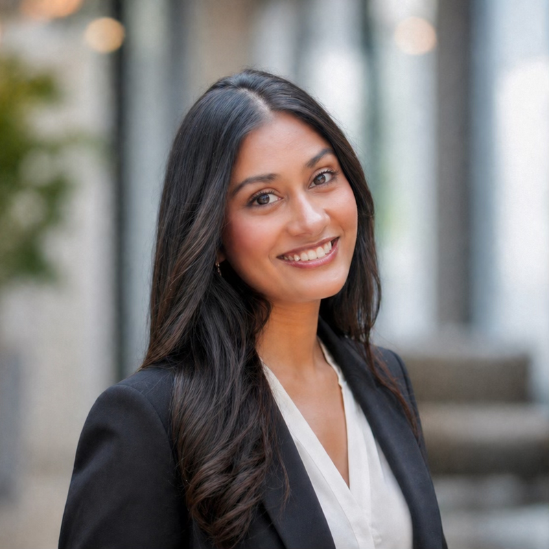
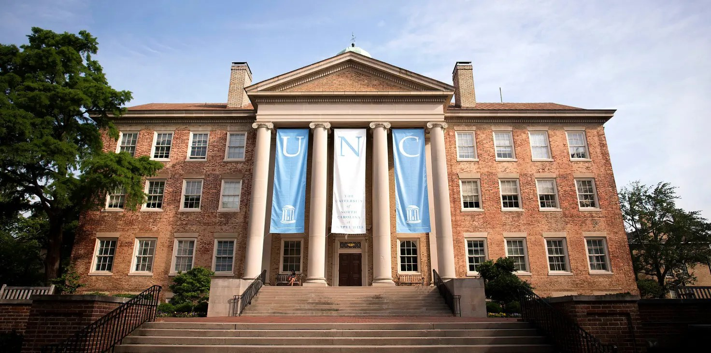

I am a first-year student at UNC Chapel Hill planning to major in Biomedical Engineering, with a focus on biosensors and medical devices. I'm drawn to this field because women’s health has long been underserved, both in the care women receive as patients and in how few women have shaped that care as physicians and engineers. During my undergraduate years, I hope to get involved in research that develops devices for reproductive health and finds new ways to make reproductive products accessible to the women who need them. Outside of class, I train in Bharatanatyam, a classical Indian dance form, performing in on-campus showcases and studying Carnatic music. This interest leads me to study Dramaturgy in the Dramatic Art department. I volunteer for the Children’s Miracle Network through Duke Children’s Hospital as a member of Phi Delta Epsilon Pre-Medical Fraternity. After UNC, I plan to attend medical school and specialize in OB/GYN and Maternal-Fetal Medicine, joining a generation of women physicians working to make sure women are both well cared for and well represented in medicine.

"The world cannot afford the loss of the talents of half its people."
- Rosalyn Sussman Yalow, Nobel Prize 1977, Medicine
